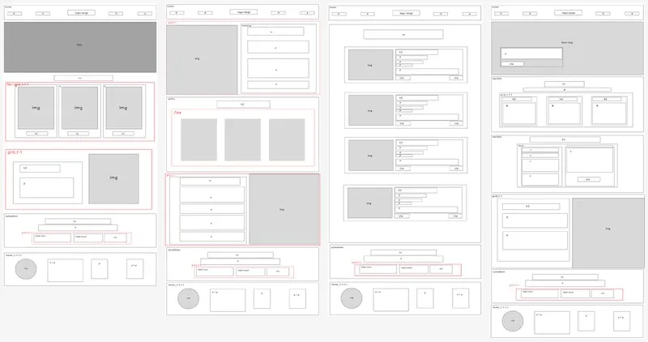

Webdesigner
med blik for detaljen
Hvem er jeg?
passion, motivation & baggrund
Passion
Mit navn er Sarah Timann Olsen, og jeg er 22 år gammel. Jeg er multimediedesignstuderende på Erhvervsakademi København og har en stærk interesse for webdesign og frontend, hvor jeg kan kombinere min passion for visuel identitet og digital kommunikation med min evne til at omsætte idéer til konkrete løsninger. Jeg trives i krydsfeltet mellem design og teknik, hvor jeg både kan tænke kreativt og arbejde struktureret med implementering.
Motivation
Jeg har en høj læringskurve, er detaljeorienteret og enormt motiveret for at afprøve mine erfaringer fra studiet i det virkelige erhvervsliv. Jeg har en stærk trang til at lære og udvikle mig indenfor webdesign og kommunikation.
Baggrund
Min baggrund som værnepligtig og guide i Sydafrika har givet mig evnen til at tage ansvar, bevare overblikket og kommunikere klart - kompetencer jeg ser som en styrke i samarbejde og projekter.
CV Sarah Timann
I min tid som værnepligtig lærte jeg at tage ansvar, både for mine egne opgaver og i samarbejdet med en gruppe. Jeg oplevede, hvor vigtigt det er at kunne arbejde tæt sammen med andre under pres og stadig holde fokus på et fælles mål. Gennem selvdisciplin lærte jeg at strukturere min tid og fastholde en høj arbejdsmoral, også når situationen var krævende.
I min tid som guide i Sydafrika lærte jeg at kommunikere klart og tilpasse min formidling til forskellige målgrupper. Jeg fik erfaring med at arbejde sammen med mennesker fra andre lande og opnåede en stærk kulturel forståelse. Samtidig lærte jeg at yde service, være imødekommende og tænke problemløsende, mens jeg også havde ansvar for at organisere og koordinere aktiviteter.
I mine tre år som livredder, hvor jeg også havde ansvar for førstehjælp, lærte jeg at udvise empati og hjælpsomhed ved at støtte mennesker i stressede situationer. Samtidig opnåede jeg solid erfaring med at være årvågen og hele tiden opmærksom for at sikre andres sikkerhed.
Jeg er studentermedhjælper hos Criipto, hvor jeg omsætter min viden fra studiet i praksis. Jeg arbejder med CMS-systemet HubSpot, hvor jeg står for migrering af website-indhold, vedligehold af website og andre marketing opgaver.
Kompetencer
min digitale værktøjskasse
Website Design & Layout
Jeg har arbejdet med at designe og udvikle websites, hvor struktur, typografi og interaktion spiller sammen for en stærk digital oplevelse.
GitHub, Netlify, Supabase
Grafisk Design
Jeg er rutineret i Figma, Adobe Creative Cloud og Canva og bruger værktøjerne til at skabe prototyper, visuelle identiteter og grafiske elementer.
Figma, Adobe Creative Cloud, Canva
Frontend Udvikling
Med erfaring i HTML, CSS og JavaScript kan jeg omsætte idéer til funktionelle og responsive websites, som både er visuelt tiltalende og lette at navigere.
HTML, CSS, Javascript, Astro.js, React.js, Node.js, Next.js, Tailwind CSS
Design møder kode
Med en solid forståelse for både designprincipper og kodning kan jeg skabe sammenhængende og funktionelle digitale løsninger.
Skriv til mig
glæder mig til at høre fra dig
45+ 30 20 31 70
I er meget velkomne til at kigge forbi mine projekter på GitHub eller besøge min LinkedIn, og skulle I have spørgsmål, må I endelig ikke tøve med at sende en mail eller kontakte mig på telefon.